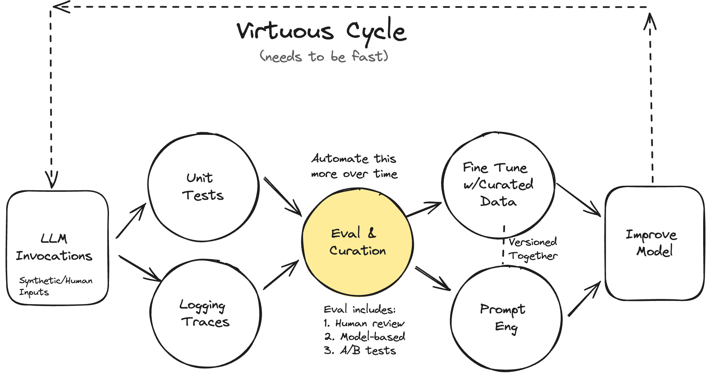
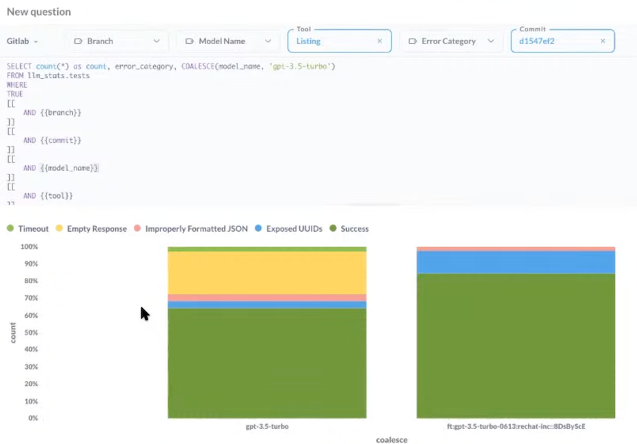
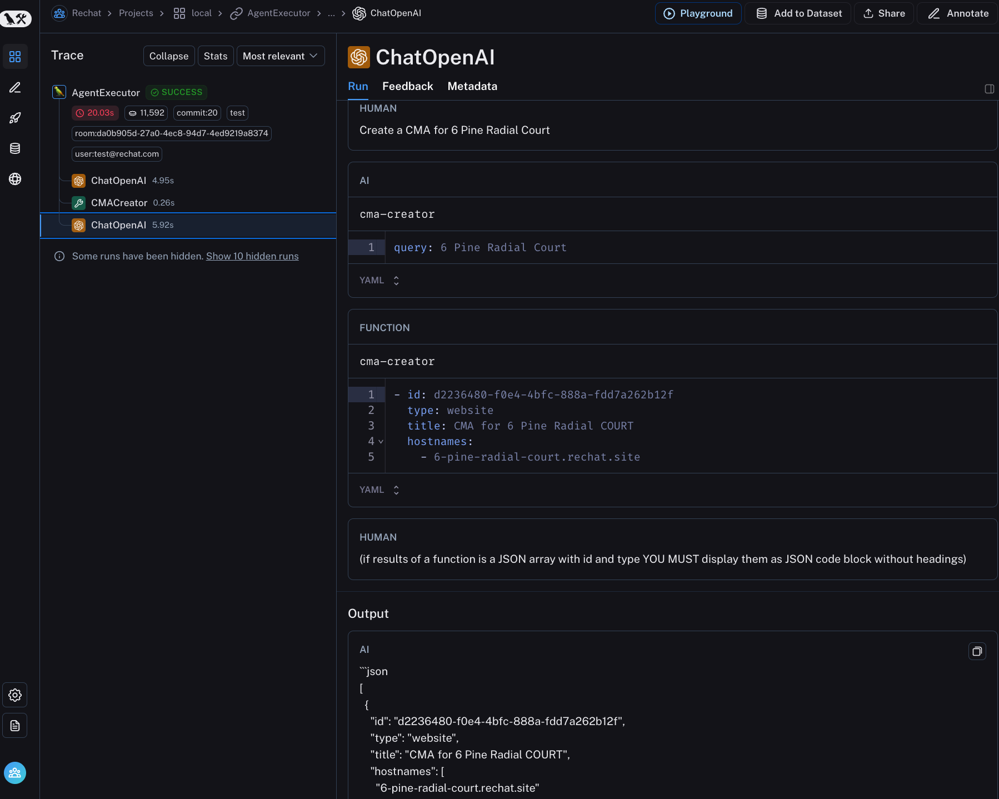
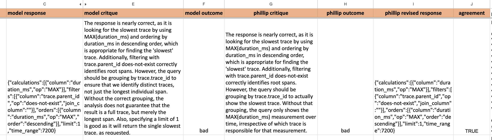

Your AI Product Needs Evals
Motivation
I started working with language models five years ago when I led the team that created CodeSearchNet, a precursor to GitHub CoPilot. Since then, I’ve seen many successful and unsuccessful approaches to building LLM products. I’ve found that unsuccessful products almost always share a common root cause: a failure to create robust evaluation systems.
I’m currently an independent consultant who helps companies build domain-specific AI products. I hope companies can save thousands of dollars in consulting fees by reading this post carefully. As much as I love making money, I hate seeing folks make the same mistake repeatedly.
This post outlines my thoughts on building evaluation systems for LLMs-powered AI products.
Iterating Quickly == Success
Like software engineering, success with AI hinges on how fast you can iterate. You must have processes and tools for:
- Evaluating quality (ex: tests).
- Debugging issues (ex: logging & inspecting data).
- Changing the behavior or the system (prompt eng, fine-tuning, writing code)
Many people focus exclusively on #3 above, which prevents them from improving their LLM products beyond a demo.1 Doing all three activities well creates a virtuous cycle differentiating great from mediocre AI products (see the diagram below for a visualization of this cycle).
If you streamline your evaluation process, all other activities become easy. This is very similar to how tests in software engineering pay massive dividends in the long term despite requiring up-front investment.
To ground this post in a real-world situation, I’ll walk through a case study in which we built a system for rapid improvement. I’ll primarily focus on evaluation as that is the most critical component.
Case Study: Lucy, A Real Estate AI Assistant
Rechat is a SaaS application that allows real estate professionals to perform various tasks, such as managing contracts, searching for listings, building creative assets, managing appointments, and more. The thesis of Rechat is that you can do everything in one place rather than having to context switch between many different tools.
Rechat’s AI assistant, Lucy, is a canonical AI product: a conversational interface that obviates the need to click, type, and navigate the software. During Lucy’s beginning stages, rapid progress was made with prompt engineering. However, as Lucy’s surface area expanded, the performance of the AI plateaued. Symptoms of this were:
- Addressing one failure mode led to the emergence of others, resembling a game of whack-a-mole.
- There was limited visibility into the AI system’s effectiveness across tasks beyond vibe checks.
- Prompts expanded into long and unwieldy forms, attempting to cover numerous edge cases and examples.
Problem: How To Systematically Improve The AI?
To break through this plateau, we created a systematic approach to improving Lucy centered on evaluation. Our approach is illustrated by the diagram below.

This diagram is a best-faith effort to illustrate my mental model for improving AI systems. In reality, the process is non-linear and can take on many different forms that may or may not look like this diagram.
I discuss the various components of this system in the context of evaluation below.
The Types Of Evaluation
Rigorous and systematic evaluation is the most important part of the whole system. That is why “Eval and Curation” is highlighted in yellow at the center of the diagram. You should spend most of your time making your evaluation more robust and streamlined.
There are three levels of evaluation to consider:
- Level 1: Unit Tests
- Level 2: Model & Human Eval (this includes debugging)
- Level 3: A/B testing
The cost of Level 3 > Level 2 > Level 1. This dictates the cadence and manner you execute them. For example, I often run Level 1 evals on every code change, Level 2 on a set cadence and Level 3 only after significant product changes. It’s also helpful to conquer a good portion of your Level 1 tests before you move into model-based tests, as they require more work and time to execute.
There isn’t a strict formula as to when to introduce each level of testing. You want to balance getting user feedback quickly, managing user perception, and the goals of your AI product. This isn’t too dissimilar from the balancing act you must do for products more generally.
Level 1: Unit Tests
Unit tests for LLMs are assertions (like you would write in pytest). Unlike typical unit tests, you want to organize these assertions for use in places beyond unit tests, such as data cleaning and automatic retries (using the assertion error to course-correct) during model inference. The important part is that these assertions should run fast and cheaply as you develop your application so that you can run them every time your code changes. If you have trouble thinking of assertions, you should critically examine your traces and failure modes. Also, do not shy away from using an LLM to help you brainstorm assertions!
Step 1: Write Scoped Tests
The most effective way to think about unit tests is to break down the scope of your LLM into features and scenarios. For example, one feature of Lucy is the ability to find real estate listings, which we can break down into scenarios like so:
Feature: Listing Finder
This feature to be tested is a function call that responds to a user request to find a real estate listing. For example, “Please find listings with more than 3 bedrooms less than $2M in San Jose, CA”
The LLM converts this into a query that gets run against the CRM. The assertion then verifies that the expected number of results is returned. In our test suite, we have three user inputs that trigger each of the scenarios below, which then execute corresponding assertions (this is an oversimplified example for illustrative purposes):
| Scenario | Assertions |
|---|---|
| Only one listing matches user query | len(listing_array) == 1 |
| Multiple listings match user query | len(listing_array) > 1 |
| No listings match user query | len(listing_array) == 0 |
There are also generic tests that aren’t specific to any one feature. For example, here is the code for one such generic test that ensures the UUID is not mentioned in the output:
const noExposedUUID = message => {
// Remove all text within double curly braces
const sanitizedComment = message.comment.replace(/\{\{.*?\}\}/g, '')
// Search for exposed UUIDs
const regexp = /[0-9a-f]{8}-[0-9a-f]{4}-[0-9a-f]{4}-[0-9a-f]{4}-[0-9a-f]{12}/ig
const matches = Array.from(sanitizedComment.matchAll(regexp))
expect(matches.length, 'Exposed UUIDs').to.equal(0, 'Exposed UUIDs found')
}CRM results returned to the LLM contain fields that shouldn’t be surfaced to the user; such as the UUID associated with an entry. Our LLM prompt tells the LLM to not include UUIDs. We use a simple regex to assert that the LLM response doesn’t include UUIDs.
Rechat has hundreds of these unit tests. We continuously update them based on new failures we observe in the data as users challenge the AI or the product evolves. These unit tests are crucial to getting feedback quickly when iterating on your AI system (prompt engineering, improving RAG, etc.). Many people eventually outgrow their unit tests and move on to other levels of evaluation as their product matures, but it is essential not to skip this step!
Step 2: Create Test Cases
To test these assertions, you must generate test cases or inputs that will trigger all scenarios you wish to test. I often utilize an LLM to generate these inputs synthetically; for example, here is one such prompt Rechat uses to generate synthetic inputs for a feature that creates and retrieves contacts:
Write 50 different instructions that a real estate agent can give to his assistant to create contacts on his CRM. The contact details can include name, phone, email, partner name, birthday, tags, company, address and job.
For each of the instructions, you need to generate a second instruction which can be used to look up the created contact.
. The results should be a JSON code block with only one string as the instruction like the following:
[
["Create a contact for John (johndoe@apple.com)",
"What's the email address of John Smith?"]
]Using the above prompt, we generate test cases like below:
[
[
'Create a contact for John Smith (johndoe@apple.com) with phone number 123-456-7890 and address 123 Apple St.',
'What\'s the email address of John Smith?'
],
[
'Add Emily Johnson with phone 987-654-3210, email emilyj@email.com, and company ABC Inc.',
'What\'s the phone number for Emily Johnson?'
],
[
'Create a contact for Tom Williams with birthday 10/20/1985, company XYZ Ltd, and job title Manager.',
'What\'s Tom Williams\' job title?'
],
[
'Add a contact for Susan Brown with partner name James Brown, and email susanb@email.com.',
'What\'s the partner name of Susan Brown?'
],
…
]For each of these test cases, we execute the first user input to create the contact. We then execute the second query to fetch that contact. If the CRM doesn’t return exactly 1 result then we know there was a problem either creating or fetching the contact. We can also run generic assertions like the one to verify UUIDs are not in the response. You must constantly update these tests as you observe data through human evaluation and debugging. The key is to make these as challenging as possible while representing users’ interactions with the system.
You don’t need to wait for production data to test your system. You can make educated guesses about how users will use your product and generate synthetic data. You can also let a small set of users use your product and let their usage refine your synthetic data generation strategy. One signal you are writing good tests and assertions is when the model struggles to pass them - these failure modes become problems you can solve with techniques like fine-tuning later on.
On a related note, unlike traditional unit tests, you don’t necessarily need a 100% pass rate. Your pass rate is a product decision, depending on the failures you are willing to tolerate.
Step 3: Run & Track Your Tests Regularly
There are many ways to orchestrate Level 1 tests. Rechat has been leveraging CI infrastructure (e.g., GitHub Actions, GitLab Pipelines, etc.) to execute these tests. However, the tooling for this part of the workflow is nascent and evolving rapidly.
My advice is to orchestrate tests that involve the least friction in your tech stack. In addition to tracking tests, you need to track the results of your tests over time so you can see if you are making progress. If you use CI, you should collect metrics along with versions of your tests/prompts outside your CI system for easy analysis and tracking.
I recommend starting simple and leveraging your existing analytics system to visualize your test results. For example, Rechat uses Metabase to track their LLM test results over time. Below is a screenshot of a dashboard Rechat built with Metabase:

This screenshot shows the prevalence of a particular error (shown in yellow) in Lucy before (left) vs after (right) we addressed it.
Level 2: Human & Model Eval
After you have built a solid foundation of Level 1 tests, you can move on to other forms of validation that cannot be tested by assertions alone. A prerequisite to performing human and model-based eval is to log your traces.
Logging Traces
A trace is a concept that has been around for a while in software engineering and is a log of a sequence of events such as user sessions or a request flow through a distributed system. In other words, tracing is a logical grouping of logs. In the context of LLMs, traces often refer to conversations you have with a LLM. For example, a user message, followed by an AI response, followed by another user message, would be an example of a trace.
There are a growing number of solutions for logging LLM traces.2 Rechat uses LangSmith, which logs traces and allows you to view them in a human-readable way with an interactive playground to iterate on prompts. Sometimes, logging your traces requires you to instrument your code. In this case, Rechat was using LangChain which automatically logs trace events to LangSmith for you. Here is a screenshot of what this looks like:

I like LangSmith - it doesn’t require that you use LangChain and is intuitive and easy to use. Searching, filtering, and reading traces are essential features for whatever solution you pick. I’ve found that some tools do not implement these basic functions correctly!
Looking At Your Traces
You must remove all friction from the process of looking at data. This means rendering your traces in domain-specific ways. I’ve often found that it’s better to build my own data viewing & labeling tool so I can gather all the information I need onto one screen. In Lucy’s case, we needed to look at many sources of information (trace log, the CRM, etc) to understand what the AI did. This is precisely the type of friction that needs to be eliminated. In Rechat’s case, this meant adding information like:
- What tool (feature) & scenario was being evaluated.
- Whether the trace resulted from a synthetic input or a real user input.
- Filters to navigate between different tools and scenario combinations.
- Links to the CRM and trace logging system for the current record.
I’ve built different variations of this tool for each problem I’ve worked on. Sometimes, I even need to embed another application to see what the user interaction looks like. Below is a screenshot of the tool we built to evaluate Rechat’s traces:

Another design choice specific to Lucy is that we noticed that many failures involved small mistakes in the final output of the LLM (format, content, etc). We decided to make the final output editable by a human so that we could curate & fix data for fine-tuning.
These tools can be built with lightweight front-end frameworks like Gradio, Streamlit, Panel, or Shiny in less than a day. The tool shown above was built with Shiny for Python. Furthermore, there are tools like Lilac which uses AI to search and filter data semantically, which is incredibly handy for finding a set of similar data points while debugging an issue.
I often start by labeling examples as good or bad. I’ve found that assigning scores or more granular ratings is more onerous to manage than binary ratings. There are advanced techniques you can use to make human evaluation more efficient or accurate (e.g., active learning, consensus voting, etc.), but I recommend starting with something simple. Finally, like unit tests, you should organize and analyze your human-eval results to assess if you are progressing over time.
As discussed later, these labeled examples measure the quality of your system, validate automated evaluation, and curate high-quality synthetic data for fine-tuning.
How much data should you look at?
I often get asked how much data to examine. When starting, you should examine as much data as possible. I usually read traces generated from ALL test cases and user-generated traces at a minimum. You can never stop looking at data—no free lunch exists. However, you can sample your data more over time, lessening the burden. 3
Automated Evaluation w/ LLMs
Many vendors want to sell you tools that claim to eliminate the need for a human to look at the data. Having humans periodically evaluate at least a sample of traces is a good idea. I often find that “correctness” is somewhat subjective, and you must align the model with a human.
You should track the correlation between model-based and human evaluation to decide how much you can rely on automatic evaluation. Furthermore, by collecting critiques from labelers explaining why they are making a decision, you can iterate on the evaluator model to align it with humans through prompt engineering or fine-tuning. However, I tend to favor prompt engineering for evaluator model alignment.
I love using low-tech solutions like Excel to iterate on aligning model-based eval with humans. For example, I sent my colleague Phillip the following spreadsheet every few days to grade for a different use-case involving a natural language query generator. This spreadsheet would contain the following information:
- model response: this is the prediction made by the LLM.
- model critique: this is a critique written by a (usually more powerful) LLM about your original LLM’s prediction.
- model outcome: this is a binary label the critique model assigns to the
model responseas being “good” or “bad.”
Phillip then fills out his version of the same information - meaning his critique, outcome, and desired response for 25-50 examples at a time (these are the columns prefixed with “phillip_” below):

This information allowed me to iterate on the prompt of the critique model to make it sufficiently aligned with Phillip over time. This is also easy to track in a low-tech way in a spreadsheet:

This is a screenshot of a spreadsheet where we recorded our attempts to align model-based eval with a human evaluator.
General tips on model-based eval:
- Use the most powerful model you can afford. It often takes advanced reasoning capabilities to critique something well. You can often get away with a slower, more powerful model for critiquing outputs relative to what you use in production.
- Model-based evaluation is a meta-problem within your larger problem. You must maintain a mini-evaluation system to track its quality. I have sometimes fine-tuned a model at this stage (but I try not to).
- After bringing the model-based evaluator in line with the human, you must continue doing periodic exercises to monitor the model and human agreement.
My favorite aspect about creating a good evaluator model is that its critiques can be used to curate high-quality synthetic data, which I will touch upon later.
Level 3: A/B Testing
Finally, it is always good to perform A/B tests to ensure your AI product is driving user behaviors or outcomes you desire. A/B testing for LLMs compared to other types of products isn’t too different. If you want to learn more about A/B testing, I recommend reading the Eppo blog (which was created by colleagues I used to work with who are rock stars in A/B testing).
It’s okay to put this stage off until you are sufficiently ready and convinced that your AI product is suitable for showing to real users. This level of evaluation is usually only appropriate for more mature products.
Evaluating RAG
Aside from evaluating your system as a whole, you can evaluate sub-components of your AI, like RAG. Evaluating RAG is beyond the scope of this post, but you can learn more about this subject in a post by Jason Liu.
Eval Systems Unlock Superpowers For Free
In addition to iterating fast, eval systems unlock the ability to fine-tune and debug, which can take your AI product to the next level.
Fine-Tuning
Rechat resolved many failure modes through fine-tuning that were not possible with prompt engineering alone. Fine-tuning is best for learning syntax, style, and rules, whereas techniques like RAG supply the model with context or up-to-date facts.
99% of the labor involved with fine-tuning is assembling high-quality data that covers your AI product’s surface area. However, if you have a solid evaluation system like Rechat’s, you already have a robust data generation and curation engine! I will expand more on the process of fine-tuning in a future post.4
Data Synthesis & Curation
To illustrate why data curation and synthesis come nearly for free once you have an evaluation system, consider the case where you want to create additional fine-tuning data for the listing finder mentioned earlier. First, you can use LLMs to generate synthetic data with a prompt like this:
Imagine if Zillow was able to parse natural language. Come up with 50 different ways users would be able to search listings there. Use real names for cities and neighborhoods.
You can use the following parameters:
<ommitted for confidentiality>
Output should be a JSON code block array. Example:
[
"Homes under $500k in New York"
]This is almost identical to the exercise for producing test cases! You can then use your Level 1 & Level 2 tests to filter out undesirable data that fails assertions or that the critique model thinks are wrong. You can also use your existing human evaluation tools to look at traces to curate traces for a fine-tuning dataset.
Debugging
When you get a complaint or see an error related to your AI product, you should be able to debug this quickly. If you have a robust evaluation system, you already have:
- A database of traces that you can search and filter.
- A set of mechanisms (assertions, tests, etc) that can help you flag errors and bad behaviors.
- Log searching & navigation tools that can help you find the root cause of the error. For example, the error could be RAG, a bug in the code, or a model performing poorly.
- The ability to make changes in response to the error and quickly test its efficacy.
In short, there is an incredibly large overlap between the infrastructure needed for evaluation and that for debugging.
Conclusion
Evaluation systems create a flywheel that allows you to iterate very quickly. It’s almost always where people get stuck when building AI products. I hope this post gives you an intuition on how to go about building your evaluation systems. Some key takeaways to keep in mind:
- Remove ALL friction from looking at data.
- Keep it simple. Don’t buy fancy LLM tools. Use what you have first.
- You are doing it wrong if you aren’t looking at lots of data.
- Don’t rely on generic evaluation frameworks to measure the quality of your AI. Instead, create an evaluation system specific to your problem.
- Write lots of tests and frequently update them.
- LLMs can be used to unblock the creation of an eval system. Examples include using a LLM to:
- Generate test cases and write assertions
- Generate synthetic data
- Critique and label data etc.
- Re-use your eval infrastructure for debugging and fine-tuning.
I’d love to hear from you if you found this post helpful or have any questions. My email is hamel@parlance-labs.com.
This article is an adaptation of this conversation I had with Emil Sedgh and Hugo Browne-Anderson on the Vanishing Gradients podcast. Thanks to Jeremy Howard, Eugene Yan, Shreya Shankar, Jeremy Lewi, and Joseph Gleasure for reviewing this article.
Footnotes
This is not to suggest that people are lazy. Many don’t know how to set up eval systems and skip these steps.↩︎
Some examples include arize, human loop, openllmetry and honeyhive.↩︎
A reasonable heuristic is to keep reading logs until you feel like you aren’t learning anything new.↩︎
If you cannot wait, I’ll be teaching this course on fine-tuning soon.↩︎